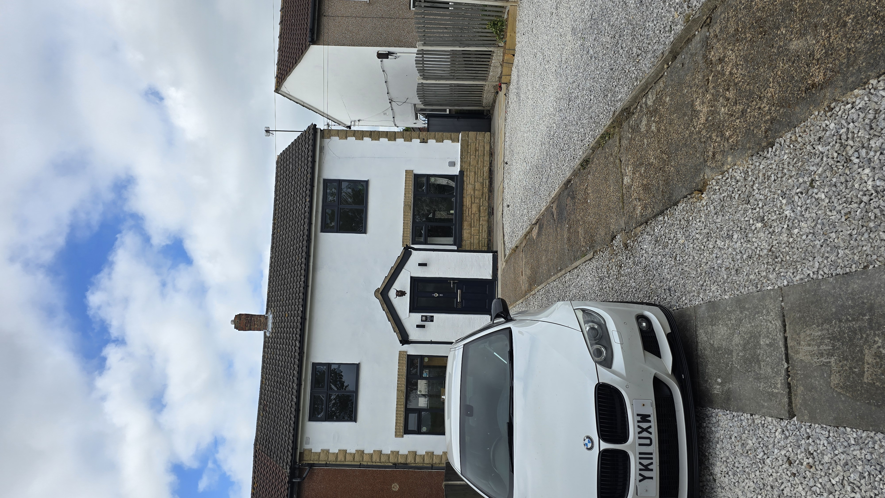

Stainforth, Doncaster - from £100/night
Stainforth M18 Contractor House Sleeps 7
A Stainforth, Doncaster house aimed at contractors, working guests and practical group stays. The property sleeps up to 7 guests, has three bedrooms, four beds, free parking, a modern kitchen and dining space, and straightforward access towards the M18.


Property facts
Contractor house in Stainforth, Doncaster
This property is built around work-stay practicality: enough beds for a small team, parking, kitchen and dining space, and a location that makes sense for Doncaster jobs around Stainforth, Hatfield, Thorne and the M18.
Photos
Exterior, parking and CHJB interior examples
The current local photo set for this property is strongest for the exterior and parking area, so the page pairs that with CHJB Short Stays interior examples while the booking calendar carries the full live listing.


Who it suits
For contractors needing M18 access
The Stainforth M18 house is the page to send people who are searching for contractor accommodation close to the motorway rather than a city-centre stay. It is aimed at working guests who want a clean base, practical parking and a route that works for the job.
For teams, having a kitchen, dining area and lounge means people can eat together, plan the next day and keep the booking simple. For longer stays, the house gives more routine than moving workers between hotel rooms.
Location
Stainforth location for M18, Hatfield and Thorne routes
The booking listing positions the house around Stainforth, Doncaster, with easy access towards Doncaster, the railway station and the M18. That makes it useful for contractors and project teams working across the east side of the Doncaster area.
M18 access
Useful when the job is not in the city centre and the team needs road links first.
Hatfield and Thorne
A practical Stainforth base for work routes around nearby Doncaster areas.
Direct booking
The property-specific button goes straight to the M18 house calendar so guests do not have to search again.
Property FAQs
Questions about the Stainforth M18 contractor house
How many guests can the Stainforth M18 house sleep?
The current booking listing shows the property sleeping up to 7 guests.
How many bedrooms does it have?
The current Uplisting property data shows three bedrooms and four beds.
Is it suitable for contractors?
Yes. The page is aimed at contractors and working guests who need free parking, M18 access and a practical Doncaster-area base.
Does it have parking?
Yes. The booking listing describes free parking for multiple cars or vans.
How do I book this exact property?
Use the property-specific direct booking button on this page. It opens the Stainforth M18 house booking page directly.
Check the Stainforth M18 house dates
Open the direct booking calendar for this property to see live availability and the current nightly price.
Check availability for this property